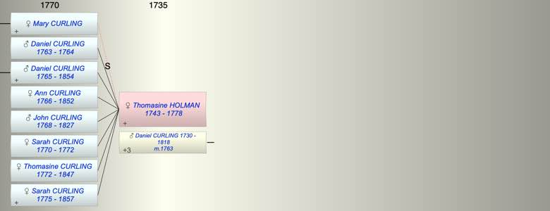

| [Index] |
| Thomasine HOLMAN (1743 - 1778) |
|  |
| b. 1743 |
| m. 13 Jan 1763 Daniel CURLING (1730 - 1818) at St Laurence |
| d. 01 Mar 1778 at St Laurence aged 35 |
| Events in Thomasine HOLMAN (1743 - 1778)'s life | |||||
| Date | Age | Event | Place | Notes | Src |
| 1743 | Thomasine HOLMAN was born | ||||
| 1763 | 20 | Birth of son Daniel CURLING | St Laurence | Note 1 | |
| 13 Jan 1763 | 20 | Married Daniel CURLING (aged 33) | St Laurence | Note 2 | |
| 1764 | 21 | Death of son Daniel CURLING (aged 1) | St Laurence | Note 3 | |
| 1765 | 22 | Birth of son Daniel CURLING | St Laurence | Note 4 | |
| 1766 | 23 | Birth of daughter Ann CURLING | St Laurence | Note 5 | |
| 16 Mar 1768 | 25 | Birth of son John Garrett CURLING | St Laurence | Note 6 | |
| 29 Oct 1770 | 27 | Birth of daughter Sarah CURLING | St Laurence | Note 7 | |
| 1772 | 29 | Death of daughter Sarah CURLING (aged 2) | |||
| 24 Jul 1772 | 29 | Birth of daughter Thomasine CURLING | St Laurence | Note 8 | |
| 05 Feb 1775 | 32 | Birth of daughter Sarah CURLING | St Laurence | Note 9 | |
| 01 Mar 1778 | 35 | Thomasine HOLMAN died | St Laurence | Note 10 | |
| Created on a Mac™ using iFamily for Mac™ on 8 Oct 2023 |